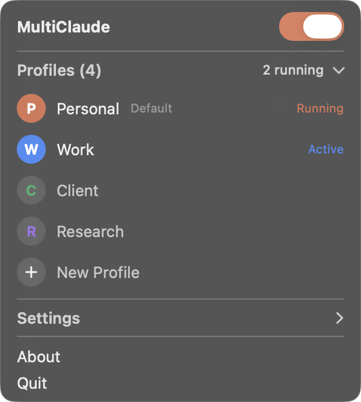

>_
Homebrew tap
Install MultiClaude on your Mac with one brew command.
Free · Casks for macOS · github.com/QuentinCar0n/homebrew-tap
$ brew tap quentincar0n/tap $ brew install --cask multiclaude $ brew info --cask multiclaude ==> multiclaude (MultiClaude): 1.11 Menu bar app to run several Claude desktop accounts side by side ==> Requirements Required: macOS >= 15

Install MultiClaude on your Mac with one brew command.